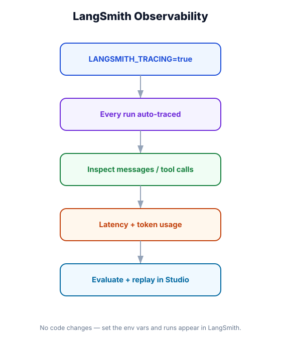

LangSmith Studio — Tracing, Evaluation & Debugging
What you'll learn: How to set up LangSmith tracing in one line, read trace trees to debug unexpected agent behavior, create evaluation datasets, run automated evals to catch regressions, and use the playground to iterate on prompts without touching code.

↗ Open full size · ⬇ Edit in Excalidraw — labels use real LangChain classes.
Aircraft black boxes record every sensor reading, control input, and system event so investigators can reconstruct exactly what happened. LangSmith is the black box for your agents: every LLM call, tool invocation, token count, latency, and error is captured in a searchable trace. When your agent does something unexpected in production, you don't guess — you open the trace and see exactly where it went wrong.
Setting Up Tracing
LangSmith tracing is enabled entirely through environment variables — no code changes needed in your agent. All LangChain calls are automatically instrumented once these are set.
# 1. Get your API key at: https://smith.langchain.com → Settings → API Keys
LANGCHAIN_API_KEY=ls__your_key_here
# 2. Enable tracing
LANGCHAIN_TRACING_V2=true
# 3. Name the project (groups traces in LangSmith UI)
LANGCHAIN_PROJECT=my-agent-appimport os
from dotenv import load_dotenv
load_dotenv() # picks up LANGCHAIN_* env vars above
from langchain_anthropic import ChatAnthropic
from langchain.agents import create_agent
# This code is unchanged — tracing happens automatically
model = ChatAnthropic(model="claude-opus-4-5")
agent = create_agent(model=model, tools=[...])
# Every invoke/stream call is now traced to LangSmith
response = agent.invoke({"messages": [("user", "What's the weather in London?")]})
# Trace appears at: https://smith.langchain.com → your project → TracesReading a Trace
Each trace is a tree. The root node is your top-level agent run; child nodes are individual LLM calls and tool invocations. Understanding the tree lets you quickly identify bottlenecks and failures.
🏷 Root Node
The full agent invocation. Shows total latency, total cost, input/output. Status: ✅ success or ❌ error.
🤖 LLM Nodes
Each model call. Shows the exact prompt sent, completion received, tokens used, latency. Click to see the full message list.
🔧 Tool Nodes
Each tool call. Shows name, input args as JSON, and the output returned. Latency tells you if a tool is slow.
🔁 Loops
Repeated LLM + tool cycles show as sequential children. Easy to spot infinite loops: trace has 20+ LLM nodes for a simple question.
Adding Custom Spans
from langsmith import traceable, trace
# @traceable wraps any function as a traced span
# — appears as a child node in the trace tree
@traceable(name="fetch_user_profile", run_type="retrieval")
async def fetch_user_profile(user_id: str) -> dict:
"""Custom function that shows up in the trace."""
# ... database call etc.
return {"user_id": user_id, "tier": "premium"}
# Add metadata to find traces by dimension
@traceable(
name="classify_intent",
metadata={"model": "gpt-4o-mini", "use_case": "routing"}
)
async def classify_intent(message: str) -> str:
...
# Attach extra data mid-run (useful for logging retrieval results)
with trace("retrieval_step") as run:
docs = retriever.invoke(query)
run.metadata["num_docs"] = len(docs)
run.metadata["query"] = queryEvaluation Datasets
LangSmith datasets let you run your agent against a fixed set of inputs and compare outputs across versions — catch regressions before they reach production.
from langsmith import Client
client = Client()
# 1. Create a dataset
dataset = client.create_dataset(
dataset_name="customer-support-evals",
description="Golden examples for the support agent"
)
# 2. Add examples: input + expected reference output
examples = [
{
"inputs": {"question": "How do I cancel my subscription?"},
"outputs": {"answer": "Go to Settings → Billing → Cancel Plan"}
},
{
"inputs": {"question": "What payment methods do you accept?"},
"outputs": {"answer": "Visa, Mastercard, PayPal, and wire transfer"}
},
{
"inputs": {"question": "Can I get a refund?"},
"outputs": {"answer": "Yes, within 30 days of purchase"}
},
]
client.create_examples(
inputs=[e["inputs"] for e in examples],
outputs=[e["outputs"] for e in examples],
dataset_id=dataset.id,
)
print(f"Dataset created: {dataset.id}")
# You can also add examples by clicking "+ Add row" in the LangSmith UIRunning Evaluations
from langsmith import Client, evaluate
from langsmith.evaluation import LangChainStringEvaluator
client = Client()
# Define what function to evaluate (your agent wrapped to match expected signature)
def run_agent(inputs: dict) -> dict:
response = agent.invoke({
"messages": [("user", inputs["question"])]
})
return {"answer": response["messages"][-1].content}
# Evaluators score each output
# 1. LLM-as-judge: uses GPT to check correctness vs reference answer
correctness_evaluator = LangChainStringEvaluator(
"labeled_criteria",
config={
"criteria": "correctness",
"llm": ChatOpenAI(model="gpt-4o", temperature=0),
}
)
# 2. Custom Python evaluator: simple string match
def contains_key_info(run, example):
"""Custom evaluator: does the answer contain the reference info?"""
reference = example.outputs.get("answer", "")
prediction = run.outputs.get("answer", "")
# Check if key words from reference appear in prediction
key_words = [w for w in reference.split() if len(w) > 4]
matches = sum(1 for w in key_words if w.lower() in prediction.lower())
score = matches / len(key_words) if key_words else 0
return {"key": "keyword_coverage", "score": score}
# Run evaluation — creates an experiment in LangSmith
results = evaluate(
run_agent,
data="customer-support-evals", # dataset name
evaluators=[correctness_evaluator, contains_key_info],
experiment_prefix="claude-opus-4-5", # name your experiment
max_concurrency=4,
)
print(results.to_pandas()[["correctness", "keyword_coverage"]].mean())The Prompt Playground
LangSmith's Playground lets you iterate on prompts directly in the browser against real LLM providers — no code needed. Open any trace → click "Open in Playground" → edit the system prompt → run. Compare outputs side-by-side before updating your code.
Store prompts in LangSmith Hub and pull them by name + version in code: from langsmith import hub; prompt = hub.pull("my-org/support-agent:v3"). When you update the prompt in the UI and bump the version, rollback is a one-liner. This decouples prompt changes from code deploys.
By default, LangSmith stores the full input and output of every LLM call — including any user messages or documents that contain personal information. Before enabling in production, review your data retention policies and use hide_inputs=True / hide_outputs=True on sensitive runs, or mask PII before logging. Enterprise LangSmith supports self-hosted deployment if data residency is a requirement.
🧪 Prompt Regression Testing
A team ships a prompt update to their legal summarization agent. Before merging, they run evaluate() against a dataset of 50 golden contracts. The new prompt scores 0.89 on accuracy vs. 0.85 for the old one — a clear win. They compare side-by-side in LangSmith, verify the gains aren't just hallucinated confidence, and ship. Two weeks later a junior dev changes the system prompt "to fix a typo" and accidentally breaks formatting — the eval catches it in CI before it hits production.
Three env vars enable full tracing with zero code changes: LANGCHAIN_TRACING_V2, LANGCHAIN_API_KEY, LANGCHAIN_PROJECT. Add @traceable to your own functions for custom spans. Build datasets from golden examples, then run evaluate() to catch regressions. Use the Playground for prompt iteration and Hub for versioned prompt management. Be careful with PII — traces store full message content by default.